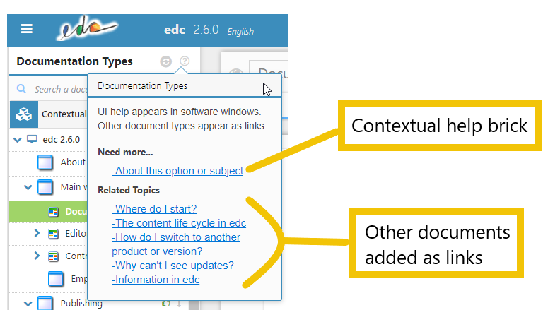
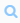
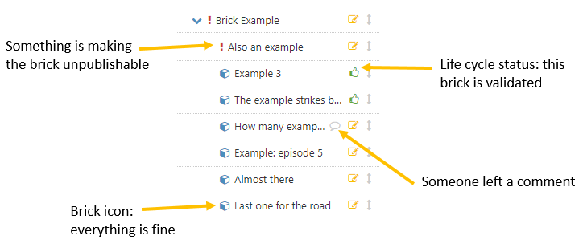

By default, edc has 7 documentation types:
- contextualized UI help
- how-tos, for instructional documents
- concepts, for theory-heavy documents
- training, for tutorials
- Q&A, for quick questions and answers
- glossary entries, to explain specific words to your users.
- release notes, to present new features and bug fixes.
You can create more types, or change the names of the existing types.
Contextualized UI help appears inside software, connected to the interface. The other types appear as links in the contextual help.

Contextual help as seen in software
In the Documentation Types panel, you can access all types of documentation.
You can use the search field  to filter the documentation. This is useful when you have a large number of documents.
The icons before the title give you information about potentially missing features. The exclamation mark icons usually means information is missing (no keys, description field left empty, etc.). A warning icon means a translation is incomplete.
To see exactly what is making the document unpublishable, mouse over the exclamation mark icon.
The key icon means the 'No keys because no need to publish this brick' option is checked.
The icons after the title tell you whether there are comments, and give you information about the life cycle status.

You can also right-click an item to access options :
- create
- edit
- add a comment
- add as link (non-contextual help items only)
- delete
For more information about Documentation types :
 |
see Structure and Prioritize your edc content on Youtube |